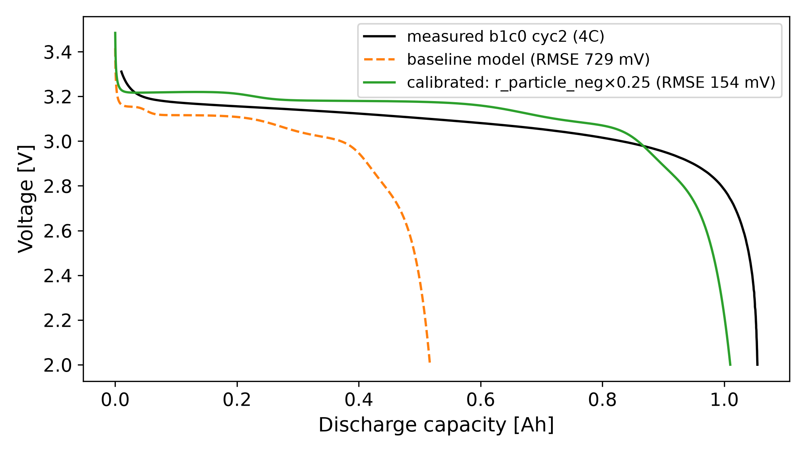
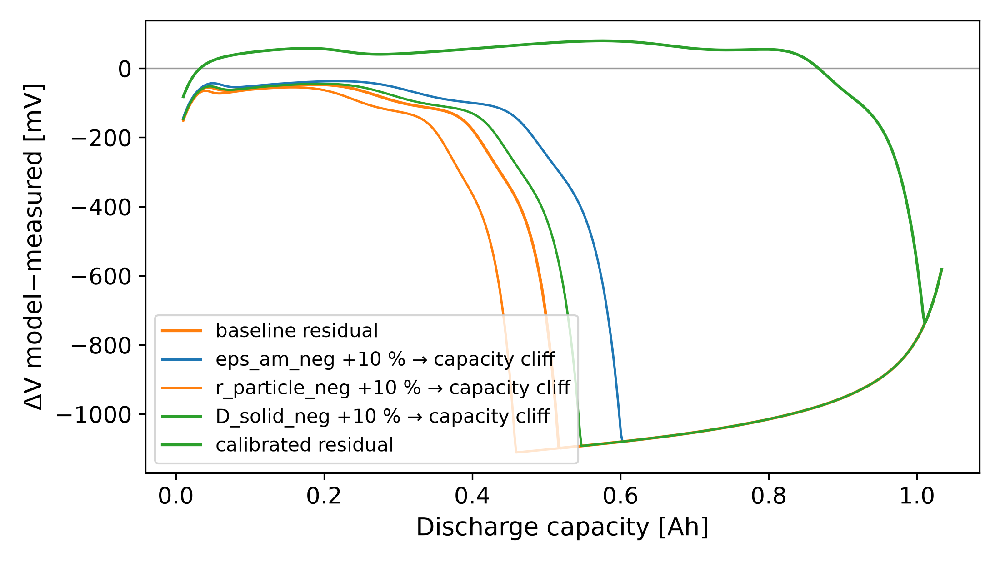
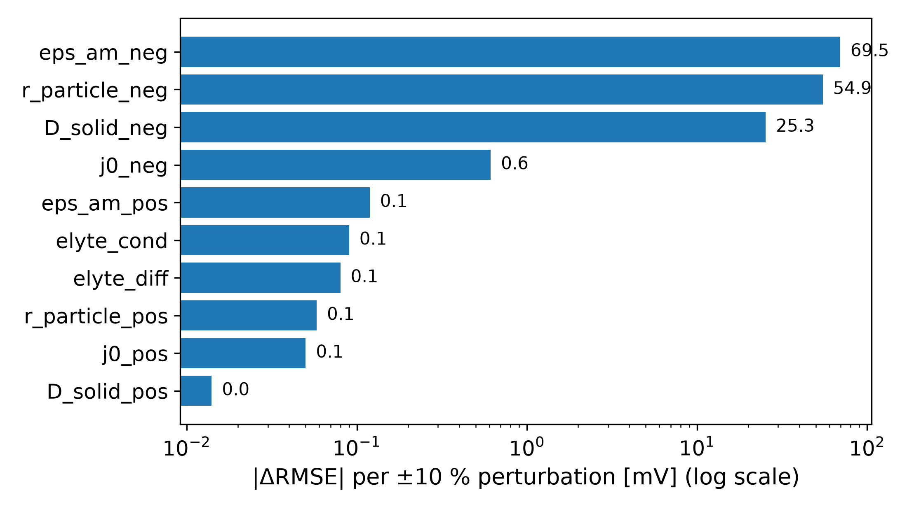

Physics-based battery aging simulation with PyBaMM
An open-source PyBaMM Doyle–Fuller–Newman (DFN) pipeline that injects coupled aging, SEI growth,
lithium-inventory loss, active-material loss, and particle cracking, then simulates 1000-cycle capacity
fade and the evolution of impedance and DRT features. It reproduces a capacity knee and a matching
polarization-resistance acceleration, and shows, at the pattern level, that the DRT
polarization-resistance growth is a degradation signature shared with two measured public datasets.
Model: PyBaMM DFN · BSD-3
Parameters: Chen 2020 / O'Kane 2022 (public)
Comparison data: Zhang 2020 & Severson 2019 (public, CC BY 4.0)
Determinism: pinned versions · no RNG · 0.0 relative on re-solve
5 · Calibration: parameter estimation as model calibration
NMC-FREE · ALL-PUBLIC LANE A separate, deliberately broken case:
the PyBaMM DFN with the public Prada2013 A123-LFP parameter set (26650), area-scaled so current
density is preserved, against a real measured curve: Severson 2019 cell b1c0, cycle 2, 4C
discharge (A123 18650, same manufacturer and chemistry family; public dataset). Out of the box the model
is badly wrong at rate: it delivers 0.52 of 1.05 Ah at 4C with a full-range voltage residual
of RMSE 729 mV: the parameter set's genuine rate limitation, not a scaling artifact.

PUBLIC-PARAM SIM + PUBLIC DATA Measured vs baseline vs
calibrated. The bounded one-parameter recalibration moves the model from 0.52 to
1.01 Ah delivered and RMSE 729 → 154 mV (green): the top-ranked capacity
parameter saturates its ≈0.70 packing bound and cannot fix the cliff alone, so the next-ranked lever,
the anode particle radius, scanned in-bounds to ×0.25, takes over. That escalation, parameter hits its
physical bound → move to the next-ranked lever, is the constrained-calibration loop in action.

Residual diagnosis. Three orthogonal residual channels: a
capacity-cliff signature points at transport/kinetics parameters that starve the cell at rate;
a vertical-offset signature points at ohmic/exchange-current terms; shape signatures
bend the mid-curve. The attribution is the measured Δ per channel, not intuition.

Sensitivity ranking. I perturbed ten physical parameters ±10% and scored them per
channel. Top three by |ΔRMSE|: anode active-material fraction (69 mV, capacity cliff), anode
particle radius (55 mV, capacity cliff), anode solid diffusivity (25 mV, capacity cliff).
The diagnosis and the winning lever agree: anode diffusion time τ = r²/D ≈ 2.3 h
far exceeds the 900-s 4C discharge, so the anode surface starves.
The TCAD line. This loop, measured characteristic vs physics simulation →
residual-shape diagnosis → numerically-ranked parameter sensitivity → targeted recalibration, is
workflow-isomorphic to semiconductor TCAD model calibration (I–V/C–V residuals → process & transport
parameter attribution → re-fit).
SCOPE Public parameter set vs public dataset; the 26650 set is
area-scaled to an 18650 capacity (current density preserved) — a pedagogical calibration demo,
not a validated A123-18650 cell model, and unrelated to any solid-state system. Baseline mismatch
is the parameter set's genuine 4C behavior, not an artifact of the scaling.